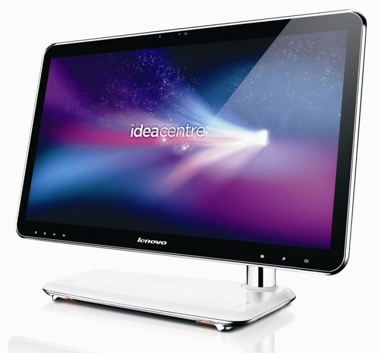

LENOVO IDEACENTER A300, TODO EN USO UTRALIGERO
Lenovo no para de innovar y sorprender a sus usuarios, y esta vez ha presentado el equipo todo en uno más delgado que se conoce hasta la fecha, y que además tiene un diseño que no pasará desapercibido, se nota que se han preocupado por brindar una muy buena primera impresión.
El IdeaCentre A300 tiene una pantalla LED de 21.5 pulgadas, con tan sólo 18.5 mm de grosor y que además integra una webcam. En su interior lleva un procesador Intel Core 2 Duo, hasta 4 GB de RAM y un disco duro de hasta 500 GB, y en cuanto a la conectividad soporta Wi-Fi y Bluetooth. La salida HDMI permite conectarse a una pantalla aún más grande, y el teclado y mouse son inalámbricos, para resaltar el excelente diseño del equipo.
Aún no se conoce la fecha de disponibilidad, pero se puede adelantar que costará unos $700 aproximadamente.
